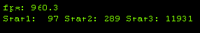
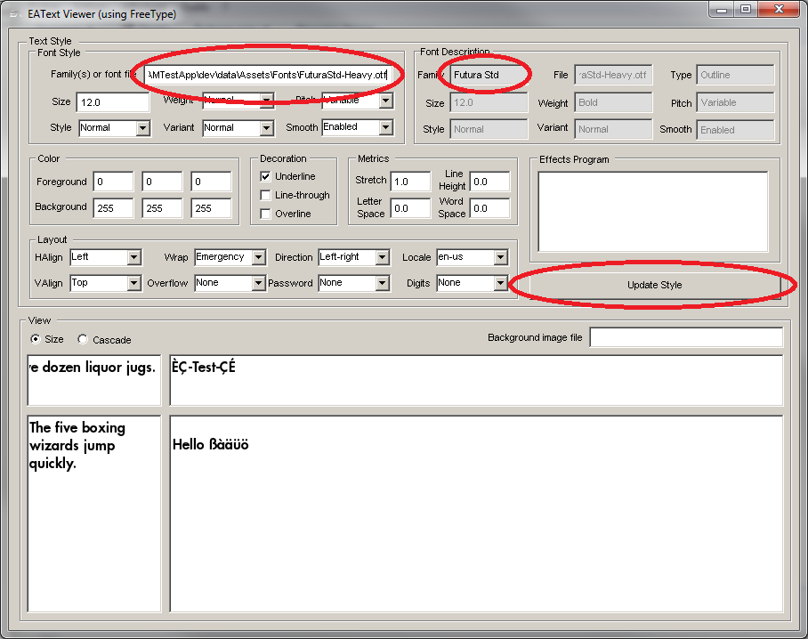
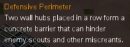
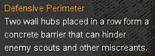
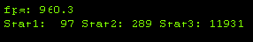
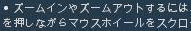
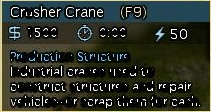
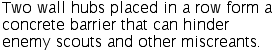
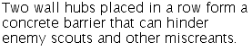

This document provides answers to frequently asked questions regarding EAText. There are some additional answers to more involved questions in the How-To document.
What is EAText?
EAText is a text layout and rendering library which supports advanced functionality. Such systems are sometimes (though somewhat mistakenly) called font systems. EAText supports a number of advanced features that basic text display libraries don't usually have. Among these are bidirectional layout, vertical layout, complex scripts such as Thai, advanced word breaking, support for styled text (e.g. HTML) display, support for the writing of text editors with all of the above features, etc. While EAText is not specific to game programming, our discussions here revolve around its use in EA game development.
Why is it called EAText instead of EAFont?
It's called EAText because EAText is about more than just fonts -- it's about character, text, and script classification and layout.
What is the legal status of EAText?
EAText is 100% hand-written by EA and there should be no legal issues associated with using it for any use within EA. However, for TrueType font support EAText uses the FreeType package which is an open source. EAText also supports using Font Fusion which is a commercial package that EA licenses for use in games. These are described below.
What platforms is EAText useful for?
EAText is designed with an eye towards 2005+ gaming platforms, but is designed to perform reasonably well on older platforms such as the PS2.
What is FreeType?
FreeType is an open source font rasterization library which is available under the FreeType License (FTL) or the GNU General Public License (GPL) version 2. It is written in C, designed to be small, efficient, highly customizable, and portable while capable of producing high-quality output (glyph images) of most vector and bitmap font formats.
What is Font Fusion?
Font Fusion is a commercial outline font rasterization library made by Bitstream and which is licensed to Electronic Arts. Font Fusion does the low level work of converting glyph outlines (e.g. Bezier) to bitmaps. Font Fusion supports a number of outline font types such as TrueType, PostScript, and PFR (Portable Font Resource). EAText builds upon Font Fusion by providing management of platform-savvy glyph caches, line and paragraph layout, text characterization, style management, etc.
What languages does EAText support?
EAText supports layout and interactive editing in at least 28 languages from 9 scripts, including:
Arabic (bidirectional) French Italian Russian Chinese (simplified and traditional) German Japanese (kanji, hiragana, katakana) Spanish Czech Greek Korean Swedish Danish Hebrew (bidirectional) Norwegian Thai (complex composition and breaking) Dutch Hindi (complex composition) Polish Tagalog English Hungarian Portuguese Turkish Finnish Icelandic Romanian Vietnamese
What types of fonts are supported by EAText?
Here we provide a list of font types supported by EAText. Note that in many cases this support is really driven by what the font library (FreeType, Font Fusion) supports.
Font Type Description TrueType Standard TrueType fonts. PostScript Includes both Type 1 and Type 2 fonts. OpenType OpenType is the successor to TrueType and PostScript. PFR Portable Font Resource (a.k.a. TrueDoc, WebFont). FFS Font Fusion Stroke -- compact Asian fonts. BmpFont EAText bitmapped fonts, produced by BitmapFontEditor and BitmapFontGenerator. PolygonFont EAText polygonal fonts (true 3D geometry), produced by PolygonFontGenerator. ContourFont EAText contour fonts (3D outlines), produced by ContourFontGenerator.
Can I use just the Unicode (or Break) portion of EAText?
As noted in the FAQ entry above, you can the Script, Unicode, Iterator, and Break modules in EAText without introducing any package or library dependencies. This may be useful for if you don't want font handling and typesetting functionality but want line breaking or other basic Unicode-related functionality. You need to set your build to compile just the following files:
- EATextUnicode.cpp
- EATextBreak.cpp
- EATextScript.cpp
What is the difference between EAText and the old rwfont?
How do I build EAText?
EAText comes with a conventional EA Framework2/nant/eaconfig build file and an associated masterconfig.xml file. There are a number of dependent packages for EAText, however. Most of these are commonly used core UTF packages such as EABase, EASTL, EAThread, etc. Each of these packages are small and all but one of them are already in common use around EA. See the above FAQ entry regarding dependencies.
If you want to make a build of EAText without using Framework2/nant/eaconfig, it's fairly easy to figure out how to do, as there are no special compilation directives to know about. Have a look at the EAText masterconfig.xml file to see what other packages EAText is dependent on. We are working to reduce the dependencies.
How efficient is EAText?
EAText is mostly a "pay as you go" system. The most basic uses of it tend to be fast and memory-friendly. As you use it to do more advanced things such as complex and/or bidirectional script layout, the cost increases. In any case, EAText does not have pathological behavior and doesn't have hiccup behavior. Memory allocation is minimal or non-existent, and memory allocation can be provided by the user. Other functionality in EAText assists in the construction of fast text display.
If you are drawing debug text in you app, them make sure to use the LayoutSimple function instead of the full-blown Typesetter layout functionality. LayoutSimple executes much faster, though at the cost of not supporting localized text.
EAText displays my TrueType font worse than Windows does.
EAText uses Font Fusion to do glyph rasterization, and Font Fusion doesn't always produce output as good as Windows does. This is partly because some fonts simply have hinting that is tuned to work specifically for the Windows font rasterizer.
Which is better, TrueType fonts or PostScript fonts?
For on-screen text such as that in computer applications TrueType fonts are better. The reason for this is that TrueType fonts have better mechanisms for displaying fonts at small sizes, whereas PostScript fonts weren't originally designed to support small sizes and the support they have for it is minimal. PostScript fonts were designed to print at high resolutions on PostScript printers.
What is the complete set of compile-time options (#defines) for EAText?
EAText is configured via a set of #defines present in EATextConfig.h. The user may override the configuration defines by either #defining their values globally for the project (which EATextConfig.h will pick up) or by simply modifying EATextConfig.h.
Can I use a Microsoft font such as Arial or Comic in my game?
Your PC game could reference the existing Windows fonts on the users' computers, but distributing a Microsoft font is another issue. Microsoft has made their fonts license-able via a company called Ascender (http://www.ascendercorp.com) and you should contact the current EA font licensing representative and Ascender to discuss the options.
Microsoft fonts have an advantage over many other fonts in that they are very well optimized for displaying on computer screens as opposed to most fonts which don't look good unless they are rendered at high resolution like with commercial printing. This explains why somebody might be interested in Microsoft fonts.
The font I am specifying doesn't seem to be what's used, or the glyphs are all squares.
EAText's FontServer uses a matching algorithm to match the user-specified font style to a Font. The primary cause of unexpected results occurs when the font family name you specify doesn't (case-insensitively) match the name of the font. You can usually tell the name of the font in Windows by double-clicking the font file (assuming it's a .ttf/.otf outline font) and seeing the name Windows shows for it. However, when using FreeType sometimes that doesn't match, and further investigation with EATextViewer may be necessary:

Another way this problem can happen is if the font file is a .ttc (True Type Collection) file, which is actually a container of multiple .ttf files, each with a potentially different family name. If the embedded fonts have differing character set support (e.g. one is Japanese, another is Korean), then you might have this problem. The solution is to get the name of each of the embedded fonts and make sure you use the right name in your text style specification. Windows is not always able to handle .ttc files (Mac and Linux can), so if you are using Windows you can use onlinefontconverter.com or ttc2ttf to examine the .ttc file.
Our platform requires us to draw our game at a given resolution which is then stretched to a wider resolution.
When you draw text and it is horizontally or vertically stretched by the machine it can look bad. You may need to use the Font::SetTransform function to set the text to draw in a pre-squished or pre-stretched way so that upon stretching or compressing it is scaled to the proper dimensions.
Can EAText create styled text?
EAText supports the functionality required to make a commercial level web browser and thus can support conventional styled text. The EA XHTML package implements an HTML parsing and display engine that follows the XHTML standard. Also, the Typesetter module of EAText provides for the ability to do styled text itself via direct calls as opposed to an HTML-like data format.
Does EAText support ClearType?
ClearType is Microsoft's term for font technology that increases the apparently resolution of fonts on LCD displays by using the RGB components of a pixel independently as if they were independent pixels. This is also known as sub-pixel antialiasing. EAText supports this and provides a document devoted to it.
Does EAText support sub-pixel positioning/rendering?
EAText supports sub-pixel glyph positioning or rendering, and line and paragraph layout is done with sub-pixel precision. However, by default glyph are generated with integer positions and advance values because TrueType hinting and bitmapped fonts are optimized for pixel boundaries. Sub-pixel glyph rendering allows inter-glyph spacing to be more accurate while preserving decent anti-aliasing of glyphs. It doesn't result in individual glyphs looking better than regular anti-aliasing. See the sub-pixel antialiasing document for detailed information about this.
How do I implement IME (Input Method Editing)?
Input Method Editing refers to a system for entering text into a word processor when the keyboard alone is insufficient for the task. The most common usage of IME is to enter Asian glyphs on a system with a mouse and (usually but not necessarily) a conventional 101 key keyboard. Desktop operating systems typically provide libraries or APIs which implement IME, though a programmer usually needs to write code to adapt an application to these libraries. Implementing an IME engine from scratch is a daunting task which is not likely to be practical for most software application developers.
As of this writing, EAText doesn't provide any IME functionality such as a wrapper for a platform-specific IME implementation. However, it is likely that some example code will eventually make it into the EAText extras directory. So check there if you are interested in this. The UTF EAApp package implements such an IME platform adapter.
My text is rendering with glyphs being clipped or stretched.
The most common cause of this is a problem with coordinate registration whereby glyph vertices are not being correctly registered to screen pixels, and roundoff errors cause the hardware renderer to omit things.
The destination coordinates that are generated by EATextTypesetter (and the deprecated EATextLayout) should all be rounded to integral boundaries when drawn to a 2D raster. The text then needs to be drawn at destination coordinates whereby the vertices do not lie on exact pixel boundaries. This is because hardware roundoff errors cause the triangles to sometimes be clipped when the vertices are right on these boundaries. With conventional 3D models in an app this happens as well, but it doesn't cause a visual problem; it's only a problem when something needs to be "pixel perfect" as does 2D text. Some graphics systems (e.g. OpenGL, DX10+) define pixel boundaries as coordinates as values ending in .0 where others define them as coordinates ending in .5 (DX9).
Some users have found that this problem occurs when they have bilinear filtering disabled in their shader or render state and enabling filtering fixes the problem. A way to this problem is to toggle between point sampling and bilinear. If there is a visible difference between the two, the 1:1 pixel mapping isn’t. 50% checkerboards are good for this, too.
Another way you can run into this problem: full-screen antialiasing (FSAA). Some FSAA modes introduce a quarter or half pixel offset into rasterization coordinates which can turn a correctly positioned text render into a pathological case. The best case is to alter the rasterization mode if possible – sometimes you can enable multisampling – and that not being possible, a workaround is to target an offset of ~0.375 or so and rely on point sampling to snap into place.
Here's what one user did to brute-force fix the problem:
In the vertex submission, I increased the quad size by a pixel and pinched the UV's in by a pixel. Overall the size of the text thus remains the same, but the clipping issues disappear.
Here's an example of the same text drawn with and without the pixel registration problem.
With registration problem Without registration problem  
Here are some additional examples of mis-registration:

My text is garbled on the screen.
There are various causes of this. Often they are usually caused by a problem with the GlyphCache, but not always, as we can see:

If you see something like either of these then you have a DXT format problem. Some graphics systems don't follow . To test this, try changing the GlyphCache format to ARGB at app init with: pGlyphCache->SetOption(EA::Text::GlyphCache::kOptionDefaultFormat, EA::Text::kTextureFormat32Bpp);
If you see something like this then you probably are using a non-linear texture format. You need to use a linear texture format such as D3DFMT_A8R8G8B8_LIN instead of D3DFMT_A8R8G8B8. If you see something like this then probably the text is being rendered with some kind of screen transform that is magnifying it or shrinking it. The example here comes from mistakenly having a back-buffer of 800x600 but a front buffer of 1280x720. This is due to the ARGB channels being in the wrong order. This can happen if the texture format mis-matches the video format or if the pixel shader is swizzling channels in some what that it shouldn't be. This is due to a missing shader due to it not being present or somehow failing to load. This is due to a TrueType font that lacks hinting and is being drawn with anti-aliasing disabled and at too small a size. The resolution is to use anti-aliasing, use a larger font size, switch to a font that has hinting, or switch to a bitmapped font. This Japanese text is somewhat blurry. This is due to using a text size that is simply too small for the amount of detail in the glyphs. The resolution is to use a larger font size, disable antialiasing (works only if the font has hinting), or switch to a bitmapped font. However, switching to a bitmapped font is hard to do for Japanese due to the large character set.
Switching to a font with hinting yields the following:

This text looks like it has been stamped over with parts of itself or has parts of letters punched away. It is the result of texture exhaustion not being handled. The GlyphCache implements one or more glyph textures which store rendered glyphs. You can set the size of textures it uses and the max number of textures it will use. Unless you specify a larger texture size or enable the use of multiple textures, the primary texture can run out of space (see picture above-rigth) if many characters from many fonts are used by the application. The GlyphCache::AddGlyphTexture function returns false if the space is exhausted and can't be expanded; the pictures at the left are a result of not handling this case. Typically you would clear the glyph cache or increase its capacity.
This one (courtesy of the Need for Speed game) was due to the font having weak TrueType hinting. The font vendor revised the hinting and sent back a better working font a few days later.
My text colors are wrong in some places
The most common cause of this is the use of DXT for font coloring that doesn't doesn't work well with DXT. This may also be due to weaknesses in the EAText runtime DXT encoder in some cases. The picture below shows an effects font drawn with DXT. Note how there are some black pixels that should be light blue.
Some small glyphs have extra pixels
Font Fusion sometimes renders glyphs slightly different from Windows GDI, and this can show up as visual imperfections with tiny font sizes. It's not so much a bug in Font Fusion as it's a case of the original font authors designing the font to work specifically for GDI with its math roundoff behaviour, etc. But bug or not, it doesn't look right. A future version of EAText will find a way to work around this problem, but in the meantime it may be best to use an alternative font, tweak the existing font, or use bitmapped fonts.
Example:
When I change registered FontServer fonts at runtime, I get glyph corruption.
Due to limitations on how the GlyphCache works, if you change fonts at runtime it's possible that existing font images will be corrupted. The solution is to either make sure that the GlyphCache is unused between changes, or to shut down and re-initialize the FontServer between changes as opposed to simply unregistering and registering fonts at runtime.
Is WOFF (Web Open Font Format) supported?
At this time, EAText currently depends on FreeType or FontFusion to support WOFF. And as of February 2013, neither has such support, though WOFF will be supported at some point in 2013 by FreeType. If you have an interest in having EAText provide WOFF support, let us know. Some third party libraries (e.g. WebKit and EA's wrapper EAWebKit) provide WOFF support on top of the font system.
My text has antialiasing problems in glyph curves
Below on the left is a picture of the problem. It is simply a result of how Font Fusion and FreeType render glyphs with anti-aliasing whereas they were originally meant to be drawn without it. The problem can be improved by using EATextEffects to draw the glyph and using a j or s curve program as follows:
SetGlyphColor 0xffffffff
DrawGlyph
ApplyCurve 0 1
Merge
Antialiasing problem With correction curve applied  
My text doesn't render at all.
There are numerous causes of this. The most common reason for this is that your rendering parameters are somehow wrong. Perhaps your triangles are backwards or your shader is wrong or your render state is incorrect or your text color is simply black or transparent. A good way to diagnose whether the problem is on the EAText side of things or the rendering side of things is to look at the LineLayout generated by EAText Typesetter. If it is non-empty and its GlyphLayoutInfoArray has sensible values then the problem is probably on the rendering side of things.
Underlines aren't getting drawn.
If your underlines aren't getting drawn then it is probably a fault or omission of your EAText-using code and not EAText itself.
EAText supports underlines via the kDFUnderline text decoration style. However, lines are separate from glyphs and require separate drawing. Just like glyph drawing, which is done by getting glyph positioning information from the LineLayout struct, line drawing is also done by getting line information from the LineLayout struct. See the LineLayout::GetGlyphDecoration function for this information.
For more about underlines (and strikethroughs), see the How-To.html doc.
I'm getting a crash in the memory manager when loading a .ttc font.
Font Fusion has a bug in its handling of .ttc files whereby it miscalculates memory sizes and mistakenly tries to do huge memory allocations. As of this writing, the only known way to fix it is to #define ENABLE_CACHING_EBLC = 0 in the FontFusion build file or in the Font Fusion config.h file.
How do I remove unneeded characters from a font?
Asian (e.g. Japanese, Chinese, Korean) fonts typically have thousands of characters, whereas some applications don't need all the characters present in the font. You can save a significant amount of memory and disk space by stripping unneeded characters from a font, provided you know precisely what characters you need and don't need.
EAText provides a FontLab Python script (RemoveGlyphs.py) to remove all characters (glyphs, actually) that aren't in a user-provided list. This script is in the EAText/extras directory. Note that this script can only be run from within the FontLab application, which of course means that you need to have access to a copy of the FontLab commercial application. FontLab is the current best-of-breed commercial font editor.
A slightly more labor-intensive method but which doesn't require FontLab is to use TTX (http://www.letterror.com/code/ttx/) to convert the TTF to XML format, delete the glyph data that you don't need, and use TTX to convert back to XML. To convert a .ttf to XML (.ttx) drag a .ttf file onto ttx.exe. The resulting XML file can be 20+ megabytes for Asian fonts. Open the XML file in an editor which can handle large sizes.
I have an Asian font that doesn't work with EAText or BitmapFontEditor, but it works on Windows or Macintosh.
Most likely this is because the font isn't a Unicode font and instead has support only for old-style Asian encodings such as Big5 (Chinese) Wansung (Korean), or ShiftJIS (Japanese). Asian fonts developed since about the year 2000 are typically Unicode, but there are quite a few older-style Asian fonts still around. EAText supports only Unicode fonts because supporting other types would needlessly bloat the code and data required to support the other encodings. What you want to do is convert the font to Unicode; see the next FAQ entry.
How do I convert my non-Unicode font to Unicode?
Unfortunately, professionally font tools such as FontLab curiously lack the ability to convert font encodings. The only tool currently able to do this is the commercial TrueKeys application (http://www.unidocsys.com/). On the other hand, you should be able to get the supplier of your font to provide a Unicode version, as all fonts really should be Unicode these days and other encodings are inefficient and waste memory and CPU cycles to handle.
How do I tell the name of a font in a .ttf file?
To see the name of a font, double click on the .ttf file and the Windows font viewer will display font information. If double-clicking the .ttf file doesn't show the font info but instead runs some other app like ACDSee then that app has stolen the .ttf file extension. In that case you can right-click the font and select the "Open With..." menu item and set it to open with C:\Windows\System32\FontView.exe. If that somehow doesn't work, then consider using the EATextViewer app or the FontViewer app which you can get from the EA package server or from the UTFTools repository on EAOS. Lastly, on some versions of Windows you can right-click a .ttf file and select "properties" from the popup menu and get information. On a Macintosh you can right-click a font and use the "Get Info" item and look at the name in the resulting info.
Text is being drawn with the wrong font.
The usual cause of this is that either you misspelled the font name or (assuming you are using the FontServer to acquire the font) you didn't register the font with the FontServer. Note that many fonts have names that are different from their file name. For example, times.ttf is a font called "Times New Roman." See the FAQ entry above for info about how to tell the name of a font in a .ttf file.
Text doesn't look very great.
The most common causes of this are:
In order to diagnose this is, you want to do two things:
Text is being drawn with what seems like the right font, but it looks ugly or rough, but it looks fine on Windows.
The most common cause of this is that the font is being drawn without smoothing, whereas the font for all practical purposes needs smoothing to look good at the sizes you are drawing it at. Typically fonts like this lack TrueType "hinting."
Also, some fonts happen to be designed in such a way that they work fine on Windows but don't look as well when drawn by other font systems such as Font Fusion. Try viewing the font in EATextViewer and if it still looks wrong then it's probably the font's fault and you may want to try another size, smoothing setting, or font.
Text is being drawn with what seems like the right font, but it looks blurry, but it looks crisp on Windows.
The most common cause of this is that the font is being drawn with smoothing, whereas it would look crisp when smoothing is disabled. Some fonts are designed to look very crisp at small sizes via TrueType font "hinting." In fact the text you are reading now is designed this way, though if you have ClearType enabled on your Windows computer then it will looks a little less crisp (though still look good).
Text drawn with EAText is bigger than I expect.
That's probably a DPI setting thing. EAText by default assumes your monitor DPI is 96 -- the same as Windows. You will notice that a size 16 font in EAText is identical to a size 16 font in Windows. However, some operating systems, such as Macintosh, assume your monitor is 72 DPI. Most likely, you were previously used to rendering text at an assumed 72 DPI.
If you are creating Font objects directly (e.g. with operator new), then you can use the Font::SetOption function with kOptionDPI. See Font.h for more. If you are using the FontServer to create fonts for you, then you can use the FontServer::SetOption function with kOptionDPI to set the DPI. In either case, you need to do this right after you create the Font or FontServer and before you use them.
The EATextConfig.h file has a parameter called EATEXT_DPI which defaults to 96 but can be set to 72. This value defines what the default dpi is for fonts is. But you can still use the Font and/or FontServer SetOption function to override this at runtime.
Lastly, you can scale your font sizes by 72 / 96 (0.75), which should have a similar or possibly identical effect.
My Chinese (or Thai, Korean, Hebrew, ...) text is blank.
Most likely this is because the text is being drawn with a font that doesn't support the given language. This can happen because:
The best way to make sure the right fonts are used is to specify them by name in the FontStyle family name array. You can either make per-locale font styles or you can specify an array of font families in order of most to least preferred. If you specify the kOptionSmartFallback FontServer option, then the FontServer will to through the extra effort of finding a font to match your text even if you didn't specify the family in the font style request.
Another possible cause of blank text is that the text is being drawn in the same color as the background.
How do I draw large text sizes?
Text derived from TrueType fonts (EATextOutlineFont) or bitmapped fonts (EATextBitmapFont) doesn't work well for large-sized text (with glyphs larger than about 30x30 texels in size), as it uses a lot of memory. Above about 128x128 in size the memory usage becomes too high to be used for drawing arbitrary text. If you try to solve this by scaling smaller sized text you will usually end up with unacceptable results.
One way to resolve this is to use polygonal fonts -- fonts based on a vertex mesh instead of based on a texture quad. EATextPolygonFont provides polygonal font support, and the PolygonFontGenerator tool creates polygonal fonts from TrueType fonts. You will need to implement the drawing the vertex information yourself, but otherwise most of the hard work is done for you. The EAText White Paper demonstrates extruded (and animated) 3D polygonal text. As of this writing, the polygonal fonts generated by PolygonFontGenerator could stand to be better compressed; they are using floating point values and have a lot of zeroes that could be pared away. Please notify the EAText maintainer if this is an issue that you would like resolved.
How do I tell EAText to make a bold font when all I have is a regular one?
Typically this feature is implemented (e.g. by Microsoft) by drawing the glyph horizontally a second time one pixel to the right, and for larger font sizes this can be combined with drawing it a pixel larger vertically as well. It doesn't look as good as a true bold font, but for some purposes it is OK. EAText supports this via EAText Effects. You can read more about Effects in the EATextEffect document, but you would use a script like this to implement a single-pixel doubling bold effect:
EffectsState es; es.SetGlyphColor(0xff000000); // Any color will work. es.SetGlyphSmooth(true); // This isn't necessary; it works with monochrome fonts as well. es.DrawGlyph(); es.Merge(); es.Clear(); es.SetGlyphOffset(1, 0); es.DrawGlyph(); es.Merge();
With larger fonts (~18+ pixels) you can do circular smears.
How do I use EAText with my graphics system?
Text must be drawn by some graphics system, but there are different graphics systems across varying applications and platforms. EAText attempts to implement as much text/font/glyph/layout as possible, but there still needs to be some glue provided by the user to make this work with a given graphics system. There are two fundamental things the user needs to provide in the way of this glue:
A subclass of EATextGlyphCache which implements four functions.
A vertex mesh container which understands the graphic system's vertex/index buffer API.
These are discussed further in the Graphics Engine Support document and an pre-made example is provided in the EATextRNA package. If you are using the RNA graphics system, you can just try using the EATextRNA functionality. Even if you aren't using RNA, it is probably a useful example to copy from. Contact the maintainers of EAText if you would like to have a RenderEngine adapter.
You should expect it to take about one or two days' work to make an EAText adapter for your graphics system, assuming you are familiar with your graphics system.
How do I draw text as textured glyphs instead of solid colored glyphs?
This is best handled outside of EAText and at the level of the user's graphics system layer over EAText. EAText Typesetter generates a LineLayout that contains positions and UV rectangle coordinates of glyphs on the EAText GlyphCache texture. What you probably want to do is write a simple pixel shader that uses the EAText GlyphCache texture glyph as a test value or alpha value which is used against your own texture to enable pixels in it or modulate their transparency. So really you are just combining the glyph alpha with a texture of your choice and drawing the texture where the glyph is opaque. With such textured glyphs its often useful to implement a dark glyph outline for the glyphs, which may or may not need to be drawn as a second pass, depending on your pixel shader.
How do I implement user password entry so that characters are replaced by ●●●●● chars ?
There are two primary means of doing this:
To use kPMPassword, set the TextStyle::mPasswordMode member to kPMPassword, and Typesetter will automatically draw all glyphs as ●, regardless of the actual characters typed. This requires that the given font have a ● char (Unicode 25CF) present.
How does the FontServer match requests to fonts?
The FontServer uses the following function to match a request (TextStyle) to one or more resulting Fonts:
Font* GetFont(const TextStyle* pTextStyle, FontSelection& fontSelection, uint32_t maxCount = 0xffffffff, Char c = kCharInvalid, Script script = kScriptUnknown, bool bManaged = true);
The following is pseudocode which describes the algorithm the FontServer uses.
fontNameList = list of all names in the requested TextStyle
fontNameList = font name substitutions on fontNameList if enabled.
candidateFaceList = all existing font faces whose names match the requested names.
Try:
for each in candidateFaceList:
matchFaceList = find the best matching existing font for each face, taking into account Char c if specified.
if matchFaceList is empty:
candidateFaceList = all existing faces
goto Try
sort matchFaceList to start with the best matching face.
create fonts for matchFaceList. Try to use existing fonts instead of creating new ones.
In summary, the FontServer gives highest priority to fonts that have the same family name (e.g. Arial) as the user's request (i.e. TextStyle::mFamilyNameArray). Next in priority is font size, then font style information, such as normal/bold/italic. If the user specifies a Char c, then regardless of how good a match is, a Font won't be selected unless it support the given Char. The same applies to the supplied Script. Always try to use an existing font instead of creating a new font that is a duplicate.
What is OpenType?
OpenType is the successor to TrueType which does two primary things:
It supports both PostScript-style and TrueType-style curves.
It defines an advanced system for glyph substitution and positioning.
OpenType is essentially a successor to TrueType and extends the functionality of TrueType to include the above features. An OpenType font typically has a file extension of either .otf or .ttf. EAText supports OpenType fonts, but doesn't support all its options, as there are a very large number of vague and rarely used OpenType features.
With EAText, you really don't need OpenType functionality unless you are laying out text in Arabic or Hindi. OpenType is also normally required for Thai, but EAText has some alternative code to allow Thai to work without OpenType. So you don't need to enable OpenType (see kOptionOpenTypeFeatures in EAText) unless the aforementioned applies to you. EAText versions after 1.04.00 disable OpenType by default.
How do I force a pair of characters to not be replaced by a ligature? How do I force a pair of characters to be replace by a ligature when they normally aren't?
You can insert either of the following Unicode characters between the given pair, depending on your intention:
200C ZERO WIDTH NON-JOINER (forces characters to not be joined)
200D ZERO WIDTH JOINER (forces characters to be joined)
From the Unicode Standard: "The ZWJ and ZWNJ are designed for marking the unusual cases where ligatures or cursive connections are required or prohibited. These characters are not to be used in all cases where ligatures or cursive connections are desired; instead, they are only for overriding the normal behavior of the text."
If the font or layout engine has ligatures disabled, then ligatures cannot be made, even if ZWJ is present.
What languages are supported by the built-in Windows fonts?
Built-in Windows fonts are often used by people to do basic testing of language support in a game. We provide a table here that identifies which Windows typefaces support which languages. The columns in blue indicate languages which Microsoft calls "WGL" (Windows Glyph List) and which consistitute the major simple languages of Europe.
Typeface West Europe East Europe Baltic Greek Russian Turkish Hebrew Arabic Thai Japanese Korean S. Chinese T. Chinese Hindi Arial Unicode MS ● ● ● ● ● ● ● ● ● ● ● ● ● ● Arial ● ● ● ● ● ● ● ● Comic Sans ● ● ● ● ● ● Courier New ● ● ● ● ● ● ● ● Microsoft Sans Serif ● ● ● ● ● ● ● ● ● Tahoma ● ● ● ● ● ● ● ● ● Times New Roman ● ● ● ● ● ● ● ● Trebuchet ● ● ● ● ● ● Verdana ● ● ● ● ● ● ● MingLiU ● ● ● ● PMingLiU ● ● ● ● BatangChe ● ● Batang ● ● Gulim ● ● MS UI Gothic ● ● MS Mincho ● ● SimSun ● ● ● Mangal ●
What character sets are associated with each language?
The following table illustrates this for the Unicode, ISO, and Microsoft standards, where n/a means that the given language is not supported by the given standard:
Language Unicode script ISO Microsoft code page Microsoft code page name Arabic Arabic Arabic S Chinese Han Simplified Chinese GBK T Chinese Han Traditional Chinese Big 5 Czech Latin Extended A Central Europe Danish Latin Latin 1 Dutch Latin Latin 1 English Latin Latin 1 Finnish Latin Latin 1 French Latin Latin 1 German Latin Latin 1 Greek Greek Greek Hebrew Hebrew Hebrew Hindi Devanagari n/a
n/a Hungarian Latin Extended A Central Europe Icelandic Latin Latin 1 Italian Latin Latin 1 Japanese Han, Hirigana, Katakana Japanese Shift-JIS Korean Hangul Korean Norwegian Latin Latin 1 Polish Latin Extended A Central Europe Portuguese Latin Latin 1 Russian Cyrillic Cyrillic Spanish Latin Latin 1 Swedish Latin Latin 1 Thai Thai Thai Turkish Latin Extended A Turkish
What are the standard fonts that come with Windows?
For Windows XP, the standard set of OS-provided fonts is:
Arial
Arial Black
Arial Bold
Arial Bold Italic
Arial Italic
Comic Sans MS
Comic Sans MS Bold
Courier 10,12,15
Courier New
Courier New Bold
Courier New Bold Italic
Courier New Italic
Estrangelo Edessa
Franklin Gothic Medium
Franklin Gothic Medium Italic
Gautami
Georgia
Georgia Bold
Georgia Bold Italic
Georgia Italic Impact
Latha
Lucida Console
Lucida Sans Unicode
Microsoft Sans Serif
Modern
MS Sans Serif 8,10,12,14,18,24
MS Serif 8,10,12,14,18,24
Mv Boli
Palatino Linotype
Palatino Linotype Bold
Palatino Linotype Bold Italic
Palatino Linotype Italic
Roman
Script
Small Fonts
Symbol 8,10,12,14,18,24
Tahoma
Tahoma Bold
Times New Roman
Times New Roman Bold
Times New Roman Bold Italic
Times New Roman Italic
Trebuchet MS
Trebuchet MS Bold
Trebuchet MS Bold Italic
Trebuchet MS Italic
Tunga
Verdana
Verdana Bold
Verdana Bold Italic
Verdana Italic
Webdings
WingDings
WST_Czech
WST_Engl
WST_Fren
WST_Germ
WST_Ital
WST_Span
WST_Swed
EAText brings in features that I don't need and would like to make it smaller.
You can remove EAText features with the following #defines, which are settable via nant globalproperties or whatever build system you are using.
<globalproperties>
EAText.EATEXT_BITMAP_USE_EAGIMEX=0 Can disable if your app doesn't use bitmapped fonts (.BmpFont files)
EAText.EATEXT_THREAD_SAFETY_ENABLED=0 Can disable if you will only access EAText from a single thread.
EAText.EATEXT_EFFECTS_ENABLED=0 Can disable if your app doesn't use text effects (e.g shadows, outlines, glows).
EAText.EATEXT_BITMAP_GLYPHS_ENABLED=0 Can disable if your app doesn't use bitmapped fonts (.BmpFont files)
EAText.EATEXT_POLYGONAL_GLYPHS_ENABLED=0 Most apps don't use polygonal glyphs.
EAText.EATEXT_STYLE_MANAGER_ENABLED=0 Can disable if your app doesn't use named styles. A lot of apps don't use named styles.
EAText.EATEXT_ARABIC_SCRIPT_SUPPORTED=0 Can disable if your app doesn't use Arabic.
EAText.EATEXT_DEVANAGARI_SCRIPT_SUPPORTED=0 Can disable if your app doesn't use Hindi.
EAText.EATEXT_THAI_SCRIPT_SUPPORTED=0 Can disable if your app doesn't use Thai.
EAText.EATEXT_OPENTYPE_ENABLED=0 Can disable if your app doesn't use Arabic or Hindi.
EAText.EATEXT_EMBEDDED_BACKUP_FONT_ENABLED=0 Can be disabled by most apps, as they provide their own proper set of fonts.
</globalproperties>
What's the difference between Font Fusion and FreeType?
See the Font Quality.html doc for additional info about font quality options and issues.